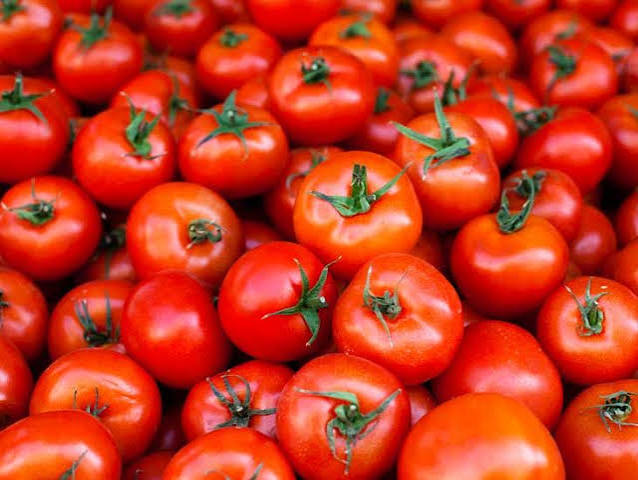

The History of Italian Food
Italian food has a long and interesting history that has developed over many centuries. Italian cuisine was influenced by the different cultures, regions and environments found across the country. Before Italy became one unified country, different areas had their own traditions, ingredients and ways of preparing food.
Because of this, there is not just one type of Italian cuisine. Northern, central and southern Italy developed different styles of cooking based on the ingredients available in their local areas. These regional differences are still an important part of Italian food today.


Early Italian Food
In earlier periods, people in Italy relied heavily on ingredients that were available locally. Grains, vegetables, olives, herbs, cheese and other local products were important parts of everyday meals. The climate and landscape of each region affected what people could grow and produce.
Food was often simple because people used what was available in their local area. Farming, fishing and livestock were important sources of food, and traditional cooking methods developed around these ingredients.


The Introduction of Tomatoes
Tomatoes later became one of the most recognisable ingredients in Italian cooking. Tomatoes originally came from the Americas and reached Europe after contact between Europe and the Americas. In Italy, tomatoes began to be used around the 1600s.
Over time, tomatoes became increasingly popular and were used in sauces and other recipes. Their popularity helped shape many of the flavours that people now associate with Italian cuisine.


Regional Italian Cuisine
One of the most important parts of Italian food is its regional diversity. Northern Italy has cooking traditions influenced by its mountains and colder climate, with ingredients such as butter, cheeses and polenta. Central Italy is known for simple ingredients, olive oil, vegetables and homemade pasta.
Southern Italy and the islands have strong Mediterranean influences. Seafood, vegetables, olive oil and tomatoes are important in many local traditions. These differences mean that travelling from one part of Italy to another can bring completely different foods and flavours.


Italian Food Today
Today, traditional Italian food continues to be an important part of Italian culture. Families still prepare traditional recipes and pass cooking knowledge from one generation to the next. Meals are also an important way for families and communities to spend time together.
Italian cuisine has also become popular around the world. However, the regional traditions and local ingredients that developed over centuries remain an important part of Italian food culture.